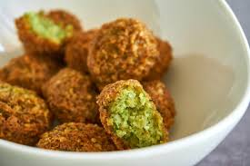

Comida típica


- 
La comida típica de Libia es un reflejo de su rica herencia cultural y de las influencias de diversas civilizaciones que han habitado la región a lo largo de los siglos. La cocina libia se caracteriza por el uso de condimentos y especias, así como por ingredientes frescos y locales. Uno de los platos más emblemáticos de Libia es el cuscús, que se prepara a base de sémola de trigo y se sirve con carne, generalmente cordero o pollo, y verduras. Este plato es común en muchas celebraciones y eventos familiares. La harira, una sopa espesa hecha con tomate, legumbres y especias, es común durante el mes de Ramadán, ofreciendo un alimento reconfortante para romper el ayuno. Los mariscos también forman parte esencial de la dieta en las regiones costeras, con platos que incluyen pescados frescos y mariscos preparados a la parrilla o en guisos.
Danza Hagalla

La danza Hagalla es una expresión cultural tradicional de la comunidad tuareg, originaria del Sahara. Esta danza, que se realiza durante celebraciones y festivales, es una manifestación de la identidad y la herencia cultural de los tuareg. Caracterizada por su ritmo vibrante y movimientos energéticos, la danza Hagalla se acompaña de música en vivo, utilizando instrumentos tradicionales como tambores y laud.
Vestimenta